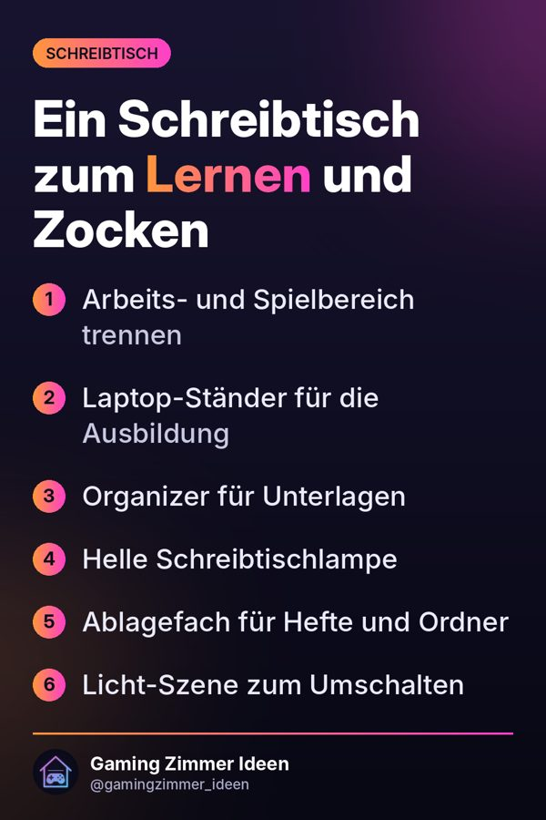

Ideen › Schreibtisch Organisation
Ein Schreibtisch zum Lernen und Zocken: 6 Ideen für beides

Schreibtisch für Schule, Ausbildung und Gaming: Arbeits- und Spielbereich trennen, ein Laptop-Ständer, ein Organizer für Unterlagen, eine helle Schreibtischlampe, ein Ablagefach für Hefte und eine Licht-Szene zum Umschalten. So konzentrierst du dich beim Lernen und entspannst beim Zocken. Jetzt merken!
Auf einen Blick
- Arbeits- und Spielbereich trennen
- Laptop-Ständer für die Ausbildung
- Organizer für Unterlagen
- Helle Schreibtischlampe
- Ablagefach für Hefte und Ordner
- Licht-Szene zum Umschalten